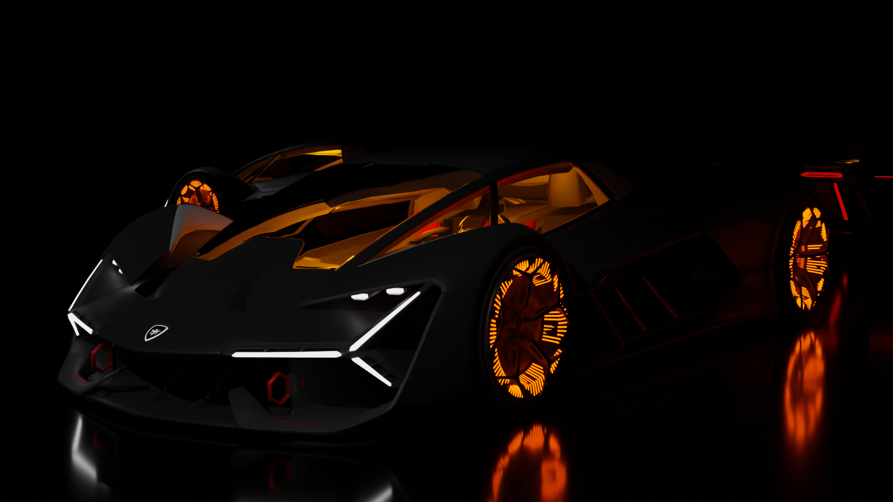
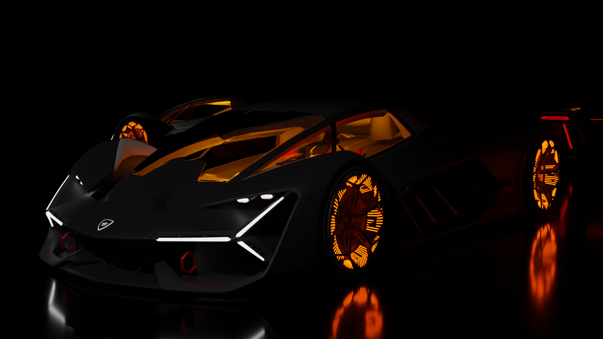

I've modelled the Hyundai N Vision 74 using the software Blender. Drawn to its captivating minimalist aesthetics and an aura of sheer power, I channeled my creative energy into reproducing every detail of this automotive marvel. While the original design had its charm, I sought to enhance its allure even further. Notably, I took the liberty of reimagining and fashioning a set of wheels that better harmonized with the car's essence. The result is a seamless blend of the Hyundai N Vision 74's original inspiration and my own vision, brought to life through the precision of 3D modeling.


I've had the incredible opportunity to bring the striking Lamborghini Terzo Millennio to life in a whole new dimension. Drawing inspiration from its awe-inspiring design and forward-thinking concept, I've endeavored to capture its essence in my 3D rendition. Every sleek curve and intricate detail reflects my admiration for the original's unparalleled style. One aspect that particularly caught my attention was the wheels - I've poured my heart into designing wheels that seamlessly blend with its overall allure. It's been a journey of admiration and creativity, and I'm humbled to share my take on this remarkable concept, hoping to do justice to its iconic name.

 
